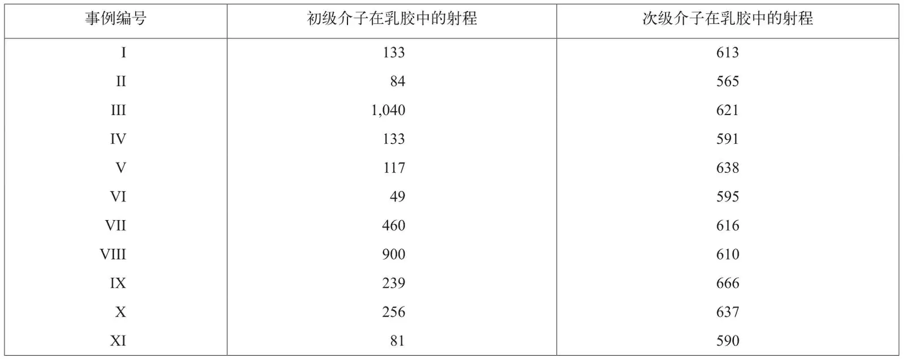
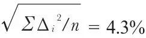
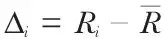
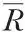
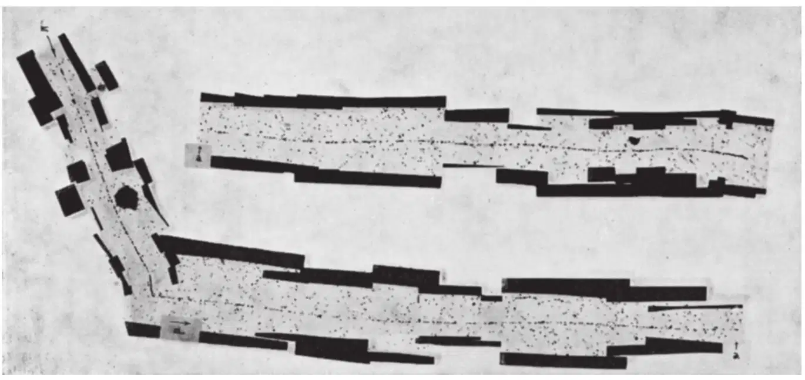
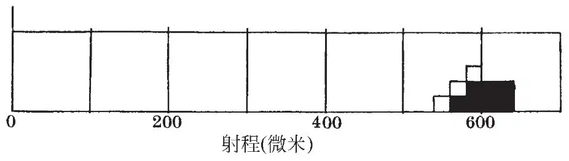
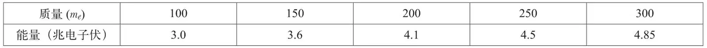
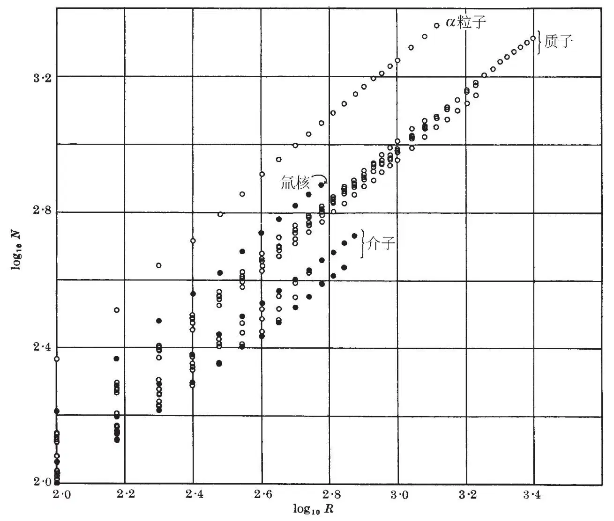
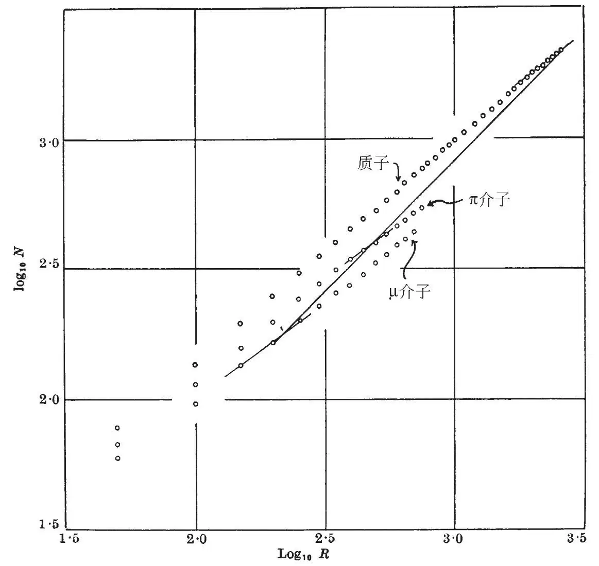
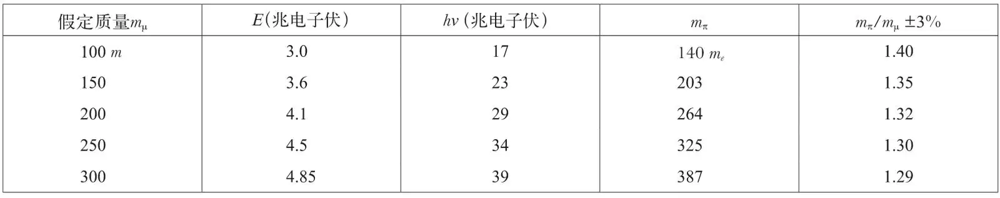

英文
英文拉特斯等
编者按
20世纪40年代后期，物理学家采用“介子”来称谓所有质量介于电子和质子间的粒子。在这篇论文中，巴西物理学家塞萨尔·拉特斯和他的同事们报道了在高海拔处受照射的照片中探测到几百个类介子粒子的观测结果，并推测其源自宇宙射线。根据上述观测结果，他们提出，初级介子进入感光乳胶时，有一部分产生了一种新的次级介子。不久他们就弄清楚了这种新粒子（即π介子）参与了核相互作用。早在1935年汤川秀树首先预言了π介子是核作用的媒介，由此他获得了1949年的诺贝尔奖。 英文
引言 最近实验显示，终止于感光乳胶中的带电介子有时会导致次级介子的产生。我们现已通过检查置于玻利维亚安第斯山脉海拔5,500米处的受照射的底片来延伸这些观测，现已发现共计有40个导致次级介子产生的事例。其中11个事例的次级粒子终止于乳胶中，因此其射程是可以确定的。本文的第一部分描述了对这些粒子径迹的测量，同时也证明了不同质量介子的存在。第二部分中（编者注：本书未收录第二部分），我们进一步证明了介子的产生，这使得我们可以得出，许多可观测到的介子是以“爆炸”式的核嬗变在局部区域产生的，同时也使我们可以对威尔逊云室和计数器实验中研究的宇宙射线的穿透成分与受照的感光底片中观测到的不同类型介子之间的关系进行探讨。 英文
第一部分. 不同质量介子的存在
如之前的报道[1]所述，我们把所有质量介于电子与质子之间的粒子称为介子。在这里需要强调的是，使用这个术语并不意味着我们认为相应的粒子必然与核子有强相互作用，或是与核的凝聚力密切相关。 英文
我们现已观测到终止于底片乳胶中的介子径迹总共为644条，其中451条发现于比利牛斯山脉的米迪山峰海拔2,800米处天文台受照射的不同类型的底片中；另外193条发现于玻利维亚安第斯山脉恰卡尔塔亚山海拔5,500米处受照射的类似底片中。海拔2,800米处受照底片中的451条径迹是在5厘米3的乳胶检测中观测到的，这相当于每天每立方厘米乳胶中到达约1.5个介子。该数据是一个下限，因为某些介子的径迹可能由于潜影衰退和射程极短难以观测而丢失。因此，真正的数值将会比该数值要稍高一些。基于我们在海平面上类似实验观测的估计，以及慢介子数目随着海拔上升而增大的合理猜想，总是可以得出，这个数值与我们在2,800米高度延迟符合实验的观测中所预期的数值具有相同量级。因此可以确定，我们观测到的介子是宇宙射线的一般组分。 英文
图1和图2分别是次级介子的两个新事例III和IV的显微照片。表1给出了直至本文执笔时观测到的所有这类事例的详细特性，其中次级粒子射程末端终止于乳胶中。 英文
表1

平均射程：614±8微米。离散系数：

，式中，
，Ri是次级介子的射程，
是n个这类粒子的射程平均值。 英文

图1．由鲍威尔夫人观测。库克95倍消色差物镜；C2伊尔福载硼核乳胶。µ介子（编者注：现在粒子物理认为“µ介子”不是介子，而是一种轻子，因此正确的称谓应为“µ子”。考虑到历史原因，文中仍保留“µ介子”的译法）的径迹由两部分给出，连接点用a和箭头表示。 英文

图2．库克95倍消色差物镜。C2伊尔福载硼核乳胶。 英文
图3是次级粒子射程的分布，这些值指的是粒子实际径迹在平行于乳胶表面的平面上的投影长度。不过真实的射程不会与给出的数值有很大的差异，因为每个径迹在大部分长度中相对于乳胶平面只倾斜很小的角度。图3中除了用黑方块表示出终止于乳胶中的次级粒子的结果之外，还用白方块表示出产生于相同过程的、于射程末端附近穿出乳胶的一些径迹的长度。 英文

图3．10个次级介子的射程分布。■表示7个次级介子在乳胶中停止；3个□表示3个次级介子在接近射程末端时离开乳胶。次级介子的平均射程为606微米。事例VIII~XI的结果未包含在本图内。 英文
介子的µ衰变
从以上测量中得到了两个重要的结论。我们的观测表明，次级介子的发射方向是随机的。因此，我们可以计算出我们所观测的那类过程中产生的次级介子径迹停留在厚度为50微米乳胶内且射程大于500微米的概率。作为一个初步近似，如果我们假定径迹是直线，则我们得出的概率为1/20。实际上，核乳胶中介子的显著的库仑散射将增加“逃逸”的概率。我们在海拔2,800米处受照底片中观测到的6个事例中的次级粒子在乳胶中的射程大于500微米，因而这6个事例相当于乳胶中出现120±50个这类特殊形式的事例。因此我们的观测证明，对于射程终止于乳胶内的介子，相当大一部分的衰变模式通常是产生次级介子。 英文
其次，次级介子射程值之间存在显著的一致性，如果粒子总以相同的速度发射，各个数值之间的变化类似于“离散”预期的值。因此我们可以得出，次级介子是质量相同的粒子，它们会以恒定的动能发射。 英文
如果较短射程的介子偶尔以另一种类型的方式发射，它们出现的频率必定比我们观测到的要低得多；因为几何条件以及径迹中较大的平均颗粒密度将会为探测它们提供更为有利的条件。实际上，我们尚未发现这类较短程的介子。然而，我们不能肯定是否有时候会产生更长射程的介子。长程介子径迹开始处的电离能力较低，加之与长径迹相关的更不利的探测条件，这两个因素将使这一类或这些类长程介子难以观测。如我们所见，由于大部分介子产生于我们已观测到的过程，因此有理由假设，如果存在其他模式的衰变，其出现频率要远低于我们已观测到的过程。因此，有力的证据证明，只产生了质量和动能为常数的一类次级介子。这就强有力地提出了一个基本过程，但这个过程并不涉及初级粒子与乳胶中的特殊类型核的相互作用。为方便起见，这一过程在后面的陈述中被称为µ衰变。我们用π表示初级介子，µ表示次级介子。至今，我们尚无可以推断出这些粒子的电荷符号的证据。在粒子射程末端终止于乳胶中的事例中，粒子停止时似乎并未进入核并产生发射重粒子的嬗变。 英文
知道了乳胶中质子的射程–能量关系后，如果设定了粒子的某个质量值，次级介子的发射能量便可以根据其观测到的射程导出。据此，表2列出了不同质量对应的介子能量的计算值。 英文
表2

对于能量大于13兆电子伏的质子尚未确立射程–能量关系，因此必须依靠已经确立的低能关系外推。我们估计，表2中给出的能量在10%以内是正确的。 英文
π介子和µ介子质量差的证据
我们已指出[1]，用初级介子与乳胶中原子核的相互作用导致一个与初级介子质量相同的高能介子的产生难以解释µ衰变。因此可以认为，已有的观测表明存在不同质量的介子。由于支持这个观点的论据完全依赖于能量守恒定律，因此无论它们在其他理论背景中的合理性如何，都对能够产生必要的能量释放的若干过程进行了探索。弗兰克博士更加仔细地重新检验了这种可能性，并在随后发表的一篇论文中给出了他的结论。他的分析指出，无论用核嬗变或用“聚集”过程都很难解释我们的观测，其中“聚集”过程是指，假设负介子能够与氢核结合，质子可以进入轻元素的稳定核内并释放结合能。我们现已发现，基于颗粒计数的证据，可能会巩固存在不同质量介子的总论点。 英文
我们已反复强调[1]，由颗粒计数推出粒子质量的结论时，一定要十分地谨慎。这类测定中的误差主要来自由快速粒子通过卤化银颗粒所产生的潜影的易变性。然而，在µ衰变过程的情况下，出现了重要的简化现象。我们可以合理地假设，两个介子的径迹是快速接连产生的，并遭到相同程度的潜像衰退。其次，在这类事例中完全的双径迹包含于很小的乳胶体积内，因此除了显影的程度在深度上的变化之外，两条径迹的处理条件是一样的。这些特点保证了我们是在非常有利的条件下，利用这一类事例来测定π介子和µ介子的质量比。 英文
测定径迹的颗粒密度时，我们沿着径迹对每50微米长度间隔内的颗粒计数依次进行了统计，观测是用大放大倍数（×2,000）的光学装置，并达到了最高可能的分辨率。图4是质子和介子的典型结果。这些结果是从单张底片的径迹观测中获得的，我们看到在不同类型的粒子曲线间得到了满意的分辨率。结果中相同类型的不同粒子的“发散”可归因于，在6周的受照期间内，与粒子穿过乳胶的时间相关的不同程度的潜影衰退。 英文

图4．N是剩余射程R径迹中的颗粒总数（标尺分度）。1标尺分度=0.85微米 英文
将这些方法应用于那些次级介子射程末端终止于乳胶内的µ衰变过程，我们发现，在所有这些事例中表示初级介子观测的线位于次级粒子之上。因此我们可以认为，初级介子与次级介子径迹中的颗粒密度存在显著差异，从而可知它们的质量也是不同的。当然，这个结论依赖于π介子和µ介子带有相等电荷的假定。两类粒子在径迹末端的颗粒密度与电荷量为|e|的观点是一致的。 英文
对µ介子和π介子质量更精密的比较只能在下述情况下进行，即乳胶中初级介子的径迹长度为600微米量级的情况。这样理想的事例的出现概率是很小的，表1中的III和VIII列出了我们迄今为止观测到的仅有的例子。第一个这样事例的部分显微照片的图像重现于图1，其中乳胶中的µ介子径迹长度超过1,000微米。图5是这一事例中初级和次级介子径迹颗粒数的对数与剩余射程的对数的关系图。通过比较在两个径迹中具有相同颗粒密度的剩余射程，我们可以导出质量比。据此，我们获得的结果为mπ/mµ = 2.0。对事例VIII的类似测量给出的值为1.8。在考虑这项结果的意义时必须注意到，除颗粒计数的标准偏差外，还存在其他可能的误差来源。例如，由于乳胶不是由完全均匀分布的卤化银颗粒构成而导致的误差。其中存在一些“岛屿”，其颗粒密度明显高于或低于平均值，其变化量比随机涨落要大得多。考虑到乳胶中π介子的有限射程，µ衰变的其他事例的测量不太可靠；不过它们给出的结果低于上述数值。尽管如此，我们认为真正的比值不可能低到1.5。 英文

图5．N是剩余射程R的径迹中的颗粒总数（标尺分度）。1标尺分度=0.85微米。45°线在相同的颗粒密度区域处与介子和质子曲线相交。 英文
上述结果对µ衰变过程的解释具有重要的意义。我们假定，它相应于较重的π介子的自发衰变，其中µ介子的动量与发射光子的动量数值相等但方向相反。对µ介子质量的任何假定值，我们均能通过粒子的观测射程值计算其发射能量值，从而确定其动量。据此可以确定发射光子的动量和能量；π介子的质量遵从以下关系：
c2mπ= c2mµ+ Eµ+ hv
因此可以表明，对质量mµ在100 me~300 me区间内的任意假定值，mπ/mµ比值都小于1.45，其中me是电子质量（见表3）。如果假定一个小质量粒子，例如电子或中微子，与µ介子以相反方向射出，亦会得到类似结果。 英文
表3

另一方面，如果假定在µ衰变中的动量平衡是通过发射一个与µ介子质量相等的中性粒子而达到的，则计算出的比值约为2.1∶1。 英文
因此，我们的初步测量表明，不能将次级介子的发射归因于初级粒子的自发衰变，其中一个光子或静止质量很小的粒子提供了动量平衡。另一方面，观测结果与发射了一个与µ介子质量近似相等的中性粒子的观点相一致。当发现了更多的能够为颗粒计数提供更有利条件的µ衰变事例时，才有可能做出最终的结论。 英文
（沈乃澂 翻译；朱永生 审稿）
* 这篇论文包含一些已做的演讲主要内容的总结，其中一篇是6月18日在曼彻斯特发表的，还有4篇是于7月5日~12日在都柏林高等研究所由海特勒教授组织的宇宙射线和核物理会议上发表的。关于这些观测及由此导出的结论的完整描述将在别处发表。